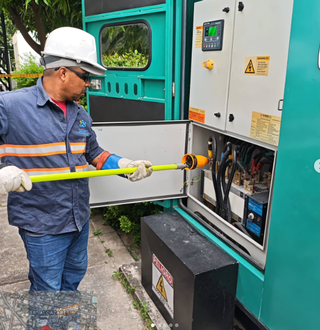
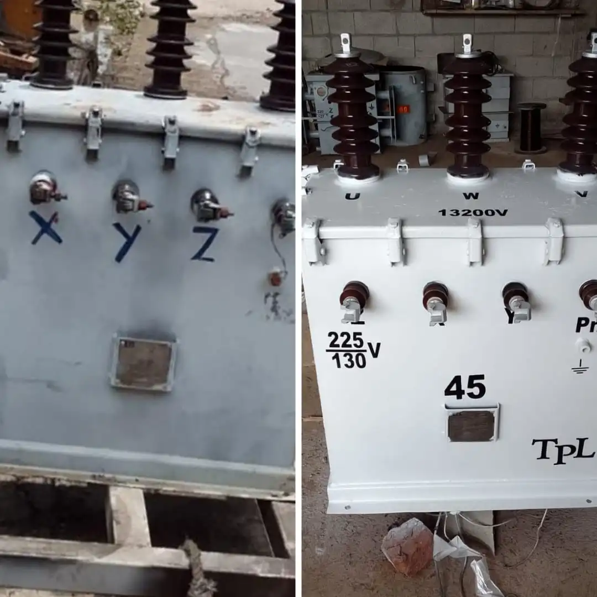
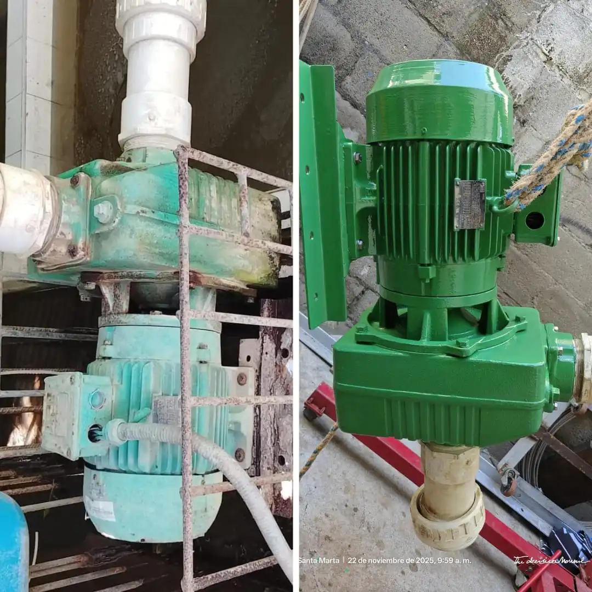
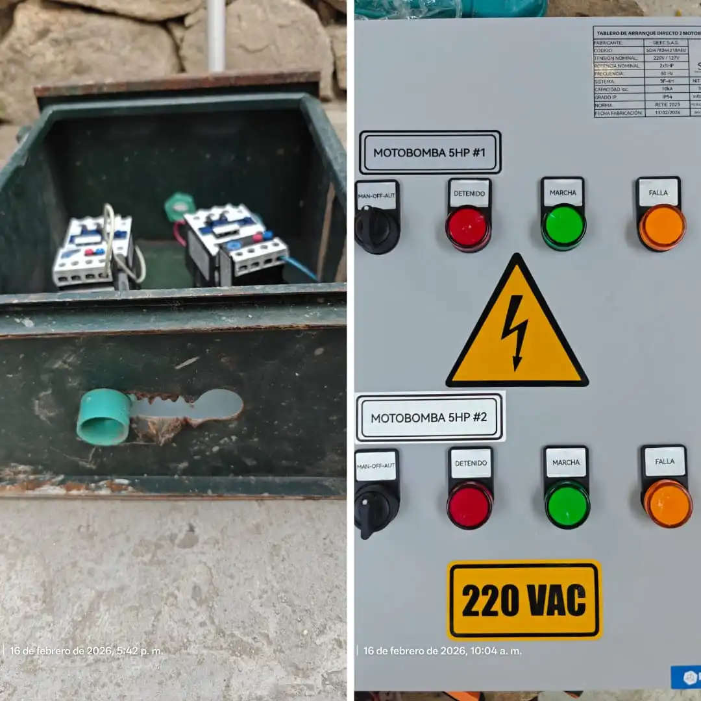

👥
Nuestro equipo
Técnicos capacitados que trabajan con orden, precisión y responsabilidad.
Detectamos y solucionamos riesgos antes de que se conviertan en problemas costosos.
Cotizar ahoraProyectos bajo normativa RETIE y NTC 2050
⮕Solución
La mayoría de los problemas eléctricos no desaparecen… solo se ocultan por un tiempo. Nosotros vamos más allá: detectamos el origen, corregimos lo que otros pasan por alto y dejamos tu sistema funcionando como debe.
Nuestro equipo
Técnicos capacitados que trabajan con orden, precisión y responsabilidad.
Nuestro diferencial
Instalaciones limpias, organizadas y pensadas para durar.

La diferencia entre un sistema que funciona “por ahora” y uno realmente seguro… está en cómo se instala desde el inicio.
Instalamos sistemas de distribución en postes y canalizaciones subterráneas, asegurando un flujo eléctrico estable y seguro. Evita sobrecargas, fallas ocultas y riesgos innecesarios.
Montaje y mantenimiento de transformadores para una correcta distribución de energía en cualquier tipo de proyecto. Garantizamos funcionamiento eficiente y continuo.
Detectamos y corregimos fallas antes de que generen daños costosos o interrupciones inesperadas. Prevención real para evitar problemas futuros.
Reparación y optimización de motores para mejorar su rendimiento y prolongar su vida útil. Menos fallas, mayor eficiencia.
Diseñamos sistemas eléctricos adaptados a cada necesidad, incluyendo automatización y control. Pensado para rendimiento y durabilidad.
Ejecución de proyectos eléctricos residenciales, comerciales e industriales con altos estándares. Seguridad y calidad desde el inicio.
Detectamos puntos calientes y fallas invisibles antes de que se conviertan en incendios o apagones. Inspección avanzada sin necesidad de interrumpir su operación eléctrica.



Proyectos
Años Exp.
Calidad
Frank Herrera Ospino es Ingeniero Electrónico y Especialista en Gerencia de Proyectos con más de 10 años de trayectoria en el sector energético e industrial. Su experiencia se centra en liderar soluciones integrales que transforman requerimientos técnicos en proyectos de alta eficiencia, integrando siempre el rigor normativo de estándares como NTC 2050, RETIE y RETILAP con una gestión estratégica orientada a la optimización de presupuestos y cumplimiento de cronogramas.
Su propuesta de valor abarca desde el diseño de redes eléctricas y sistemas de automatización hasta el mantenimiento crítico de motores y transformadores en entornos residenciales e industriales. Con un enfoque basado en la ética y la mejora continua, el Ingeniero Herrera garantiza la máxima confiabilidad operativa y el ahorro energético, asegurando que cada infraestructura no solo cumpla con la legislación colombiana, sino que potencie la seguridad y competitividad de sus clientes.
Cuéntanos qué necesitas y te responderemos lo antes posible.

Instalación y mantenimiento de redes eléctricas de media y baja tensión, incluyendo tendido en postes y canalización subterránea.
Asegurar una infraestructura profesional desde el inicio evita sobrecargas, fallas ocultas y riesgos innecesarios en el futuro.
Cotizar este servicio
Realizamos montaje, mantenimiento y diagnóstico de transformadores y subestaciones eléctricas, asegurando una correcta distribución de energía en cualquier tipo de instalación.
Un sistema de transformación bien instalado evita fallas, sobrecargas y cortes inesperados.
Cotizar este servicio
Ofrecemos mantenimiento predictivo, preventivo y correctivo para sistemas eléctricos y electromecánicos, evitando fallas y prolongando la vida útil de los equipos.
Detectar a tiempo un problema eléctrico puede ahorrarte costos altos y paradas inesperadas.
Cotizar este servicio
Desarrollamos soluciones de ingeniería eléctrica adaptadas a cada proyecto, incluyendo diseño, automatización y control de sistemas.
Diseñar bien desde el inicio garantiza eficiencia, seguridad y ahorro a largo plazo.
Cotizar este servicio